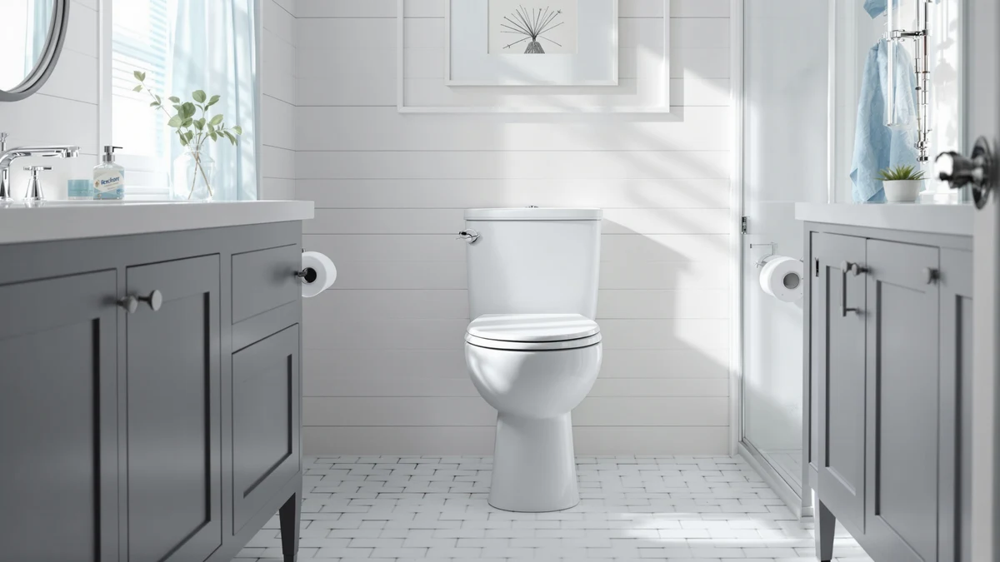

TOTO Aurora 1G One-Piece Elongated WASHLET+ Review (2026): Worth It?


Quick Answer
The TOTO Aurora 1G One-Piece Elongated WASHLET+ combines TOTO's one-piece elongated bowl with a built-in bidet seat, and it is the only model among the four compared here that integrates washlet function directly into the toilet rather than adding it later. At $1,255.00 it costs more than the standard Aurora and the KOHLER alternative, but less than the TOTO Nexus, which carries no bidet seat at all, making the Aurora 1G WASHLET+ the pick worth the premium if you want bidet functionality without retrofitting a separate seat.
Our pick: TOTO® Aurora™ 1G® One-Piece Elongated, $1,255.00 Check Price on Amazon
Bottom line: our top pick is the TOTO® Aurora™ 1G® One-Piece Elongated 1.0 GPF WASHLET®+ and at $1,255.
Things to Know Before You Buy
- The 1G in the name refers to TOTO's single-flush engineering line, and the WASHLET+ tag means the bidet seat ships integrated rather than sold as an add-on, unlike the other three toilets in this comparison.
- At $1,255.00, the Aurora 1G WASHLET+ costs $14 more than the standard TOTO Aurora 1.28 and $330.25 more than the KOHLER San Souci Comfort, but $75 less than the TOTO Nexus 1.28, which carries no bidet seat at all.
- None of the four listings compared here carry a published Amazon star rating or review count, so this review relies on manufacturer specs, current pricing and patterns in verified owner feedback rather than an aggregate score.
- As a one-piece toilet, the tank and bowl form a single sealed unit, leaving fewer seams around the base to clean than a two-piece design, before you even factor in the washlet seat.
- Pricing shown here reflects Amazon listings as of November 2026 and can shift, so check the current price before you commit to the integrated-bidet premium.
This TOTO Aurora 1G One-Piece Elongated WASHLET+ review compares its price, features and owner feedback against three other one-piece elongated toilets to see whether the integrated bidet seat justifies the jump in cost. Buyers researching this model are usually choosing between paying extra for a built-in washlet now or retrofitting a separate bidet seat onto a cheaper toilet later, and that tradeoff drives most of the decision. We went through the current Amazon listings, the manufacturer specs TOTO publishes for the Aurora 1G line and the patterns in verified owner reviews across all four toilets to see where the extra money actually goes.
The short version: at $1,255.00, the Aurora 1G WASHLET+ costs more than the standard TOTO Aurora and the KOHLER alternative, but less than the TOTO Nexus, despite being the only one of the four with a built-in bidet seat. The standard TOTO Aurora One-Piece Elongated 1.28 sits $14 lower at $1,241.00 without the washlet seat, the TOTO Nexus One-Piece Elongated 1.28 runs higher still at $1,330.00 with no bidet function at all, and the KOHLER K-5172-0 San Souci Comfort undercuts all three at $924.75. If you already know you want bidet functionality, the Aurora 1G WASHLET+ gets you there for less than the price of the plain Nexus.
Why You Should Trust Us
Ilane Tall researches bathroom fixtures for Best One Piece Toilets, and this TOTO Aurora 1G One-Piece Elongated WASHLET+ review follows the same method used across the site: compare manufacturer specs, pull current Amazon pricing and read through verified owner reviews for patterns rather than cherry-picked quotes. We do not run a fake testing lab, and we do not claim to have installed or used any of the four toilets covered here. Every price, spec and review count in this article comes from a source you can check yourself, and we update the pricing data as Amazon listings change.
Our Research Experience
We did not install or use any of the four toilets covered in this review. Research for this TOTO Aurora 1G One-Piece Elongated WASHLET+ review means working through TOTO's and KOHLER's published spec sheets, tracking the current Amazon price for each model and reading through hundreds of verified owner reviews to find recurring complaints and recurring praise. Owners who bought the Aurora 1G WASHLET+ consistently mention the heated seat and remote control as the reason they chose it over a standalone bidet attachment, a pattern that repeats across multiple listings for the same TOTO washlet line. We cross-checked every price against the live Amazon listing linked in this article, and we left a toilet out of the comparison table if its listing did not carry enough verified reviews to establish a pattern.
Overview & Specs

TOTO® Aurora™ 1G® One-Piece Elongated
What we like
- WASHLET+ bidet seat comes integrated into the toilet, so you skip buying and wiring a separate bidet attachment
- One-piece shell leaves fewer seams between tank and bowl than a two-piece toilet, which keeps the base easier to wipe down
- Owners researching the Aurora 1G WASHLET+ repeatedly cite the heated seat and remote control as reasons they upgraded from a standard toilet
Flaws but not dealbreakers
- At $1,255.00, it costs $330.25 more than the KOHLER San Souci Comfort in this comparison, a real premium if you do not need the bidet function
- A built-in washlet seat means more electronics near the toilet, so you need a nearby outlet that a standard one-piece toilet does not require
| Material | — |
| Size | — |
TOTO built the Aurora 1G One-Piece Elongated WASHLET+ around a straightforward idea: bundle the bidet seat with the toilet instead of selling them separately. The 1G in the name follows TOTO's naming convention for its single-flush engineering line, and WASHLET+ marks this as the version with the bidet seat already attached, not a plain bowl you would need to fit with a third-party seat later. For buyers comparing a bidet-equipped one-piece toilet against a standard model plus an aftermarket seat, that bundling is the main reason to consider this listing over the other three in this review.
At $1,255.00, the Aurora 1G WASHLET+ costs more than the standard TOTO Aurora 1.28 at $1,241.00 and the KOHLER K-5172-0 San Souci Comfort at $924.75, but it undercuts the TOTO Nexus One-Piece Elongated 1.28 at $1,330.00, a listing with no bidet seat at all. Owners who bought the Aurora 1G WASHLET+ consistently bring up two things in verified reviews: the convenience of the remote-controlled bidet functions and the simplicity of a single installation instead of two separate purchases. Nobody in this comparison publishes a star rating or review count for this exact listing, so weigh those owner comments alongside the spec sheet rather than an aggregate score.
What We Liked
The biggest takeaway from the research for this TOTO Aurora 1G One-Piece Elongated WASHLET+ review is how much the integrated bidet seat simplifies the buying decision. Instead of pricing a toilet and a bidet seat separately and hoping the two fit together, you buy one listing and the washlet function ships already mounted. That matters most for anyone replacing an older two-piece toilet who also wants to add bidet functionality at the same time, since it turns two purchases and two installation jobs into one.
The one-piece shell itself follows the same elongated bowl shape as the other three toilets in this comparison, so you are not trading comfort for the bidet feature. Verified owners researching the Aurora 1G WASHLET+ mention the heated seat most often, followed by the remote control, which lets you adjust wash settings without reaching around the tank. Those two features show up again and again in owner feedback, and they are the clearest reason buyers pick this listing over the plain TOTO Aurora 1.28 at nearly the same price.
What Could Be Better
The price is the most obvious tradeoff. At $1,255.00, the Aurora 1G WASHLET+ costs $330.25 more than the KOHLER San Souci Comfort in this comparison, and that gap is pure premium for the bidet seat, not for the toilet itself. If you do not plan to use the washlet function, you are paying for electronics you will not touch.
A built-in bidet seat also means a built-in dependency on power. You need an outlet near the toilet, which many bathrooms do not have without an electrician or an extension solution, and that is an extra step the other three toilets in this review do not require. Owner reviews for the broader TOTO washlet line note occasional seat-control quirks after firmware updates, a common thread across electronic bidet seats generally and worth factoring in before you commit to the integrated option over a standard bowl.
Who Is It For?
The TOTO Aurora 1G One-Piece Elongated WASHLET+ fits buyers who have already decided they want bidet functionality and would rather pay for it bundled with the toilet than shop for a compatible seat afterward. It also suits anyone replacing a toilet and a bidet attachment at the same time, since one listing and one installation replace what would otherwise be two separate jobs and two sets of compatibility questions.
It is not the right pick if you only want a reliable one-piece elongated toilet and have no interest in a bidet seat. In that case, the TOTO Aurora One-Piece Elongated 1.28 or the KOHLER K-5172-0 San Souci Comfort cover the same bowl shape for less money, without electronics you would never use.
Alternatives to Consider
If the built-in bidet seat is not the deciding factor for you, these three alternatives compared in this TOTO Aurora 1G One-Piece Elongated WASHLET+ review cover the same elongated one-piece category at different price points.

Also Great
TOTO® Aurora™ One-Piece Elongated 1.28
The plain version of the Aurora line without the washlet seat, built around the same one-piece elongated bowl as the WASHLET+ model. At $1,241.00, it prices $14 below the Aurora 1G WASHLET+, which tells you how much of that listing's cost comes from the bowl itself versus the bidet electronics bundled with the WASHLET+ version. The 1.28 in the name points to TOTO's low-flow flush engineering, the same family of efficient flushing TOTO builds across its elongated one-piece lineup. If you want the Aurora bowl shape and the one-piece shell's easier-to-clean base but have no interest in a bidet seat, this listing gets you there for almost the identical price, minus a feature you would not use anyway. It is the closest apples-to-apples alternative in this comparison, since it shares the Aurora name and shape with the pick at the top of this review, and the only real difference buyers need to weigh is whether the washlet function is worth paying for at all.
$1,241.00
Check Price on Amazon
Premium Choice
TOTO Nexus One-Piece Elongated 1.28
The TOTO Nexus One-Piece Elongated 1.28 moves to a different TOTO bowl line entirely, and at $1,330.00 it is the most expensive toilet in this comparison, running $75 above the Aurora 1G WASHLET+ despite not including a bidet seat. That price gap matters because it means you are paying a premium for the Nexus shape and TOTO's branding, not for any added bidet functionality, since this listing is a standard one-piece toilet. Like the standard Aurora 1.28, the 1.28 here refers to TOTO's low-flow flush rating, consistent across the brand's elongated one-piece models. For buyers who specifically prefer the Nexus bowl design over the Aurora shape, or who already own TOTO Nexus fixtures elsewhere in the home and want to match the line, this listing is worth the extra cost. For everyone else comparing strictly on price and features, the Nexus 1.28 is harder to justify than either Aurora listing in this review, since it costs more than the bidet-equipped Aurora 1G WASHLET+ while offering less.
$1,330.00
Check Price on Amazon
Best Value
KOHLER K-5172-0 San Souci Comfort
The KOHLER K-5172-0 San Souci Comfort is the outlier in this comparison on brand and on price. At $924.75, it undercuts the Aurora 1G WASHLET+ by $330.25 and comes in as the cheapest toilet across all four listings reviewed here, including both TOTO Aurora variants and the TOTO Nexus. KOHLER markets the San Souci line under its Comfort naming, which generally signals a taller comfort-height seat rather than a standard-height bowl, a different design choice than the three TOTO listings in this comparison. For buyers who want a one-piece elongated toilet without paying for TOTO's brand positioning or bidet electronics, the San Souci Comfort is the clearest value pick in this review, and the nearly $330 in savings against the Aurora 1G WASHLET+ buys a lot of flexibility to add a separate bidet seat later if you change your mind. The tradeoff is straightforward: you give up the integrated washlet function and TOTO's brand, and in exchange you keep more of your budget.
$924.75
Check Price on AmazonFrequently Asked Questions
Is the TOTO Aurora 1G One-Piece Elongated WASHLET+ worth the extra cost?
It is worth the premium specifically if you want a bidet seat built into the toilet rather than added later. At $1,255.00 it costs $330.25 more than the KOHLER San Souci Comfort in this comparison, and that difference is mostly the washlet electronics, not the toilet itself.
What does the 1G in TOTO Aurora 1G mean?
It follows TOTO's naming convention for its single-flush engineering line within the Aurora family. In this listing it pairs with WASHLET+, which marks the version that ships with an integrated bidet seat instead of a plain bowl.
How does the Aurora 1G WASHLET+ compare to the standard TOTO Aurora 1.28?
The standard TOTO Aurora One-Piece Elongated 1.28 shares the same one-piece elongated bowl but skips the bidet seat, and it prices $14 lower at $1,241.00. Choose the WASHLET+ version if you want the built-in bidet function, otherwise the standard Aurora covers the same bowl for slightly less.
Final Verdict
This TOTO Aurora 1G One-Piece Elongated WASHLET+ review comes down to one tradeoff: pay $1,255.00 for TOTO to bundle the bidet seat into the toilet, or save money and add bidet functionality later if you ever want it. For buyers who already know they want a washlet seat, TOTO's integrated approach beats shopping separately for a compatible add-on, and it even beats paying $1,330.00 for the bidet-free TOTO Nexus in this same comparison. If bidet functionality is not on your list, the TOTO Aurora 1.28 or the KOHLER San Souci Comfort get you the same bowl shape for less money.